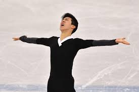
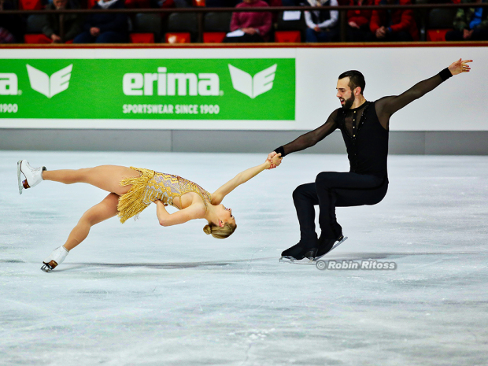
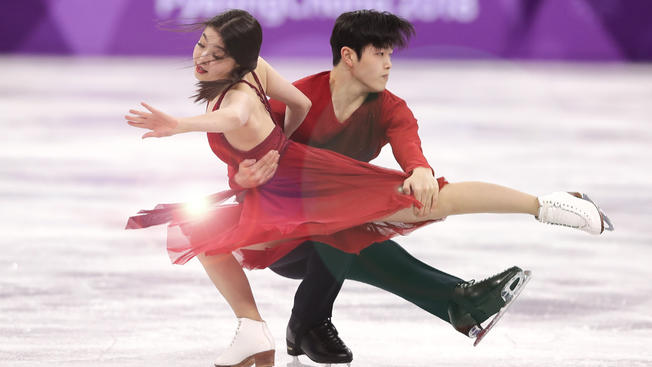
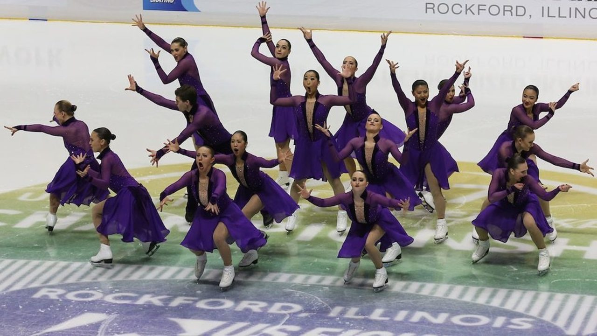
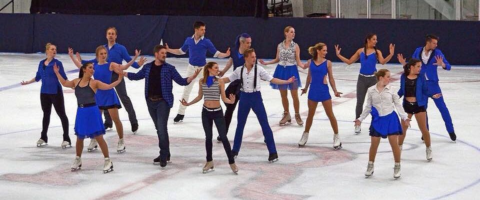

Figure skating is a very popular name for a general tree of ice skating discplines. They all use the same type of skate, which for women is white and men is black. They have toe picks, and varying types of blade heel lengths depending on the discpline. Here are some displines:
| Olympic | Other |
|---|---|
| Men's and ladies singles | Synchronized Skating |
| Pair skating teams | Theatre On Ice |
| Ice dance | |
| Popularly known | Not common knowlege |
When people talk about ice skating, generally they're refering to singles skating. Singles skating uses jumps, spins, and footwork to make a program, which is then performed at competitions. The level normally competed at the Olympics is Senior (well balanced), which is the highest level. Men currently are competing at a level where getting a quadruple, or four revolutions in one of the 6 types of jumps (loop, salchow, toe loop, flip, lutz, axel(actually is 1.5 revolutions, but triple axels are the highest revolutions for axels)). Women have struggled with reaching the same level as men, and currently the highest jump competed is a triple axel. However, earlier this year a girl in the junior level(level before senior) landed two quads in competition, showing that women will soon be at the same competitive level as men. Some famous male singles skaters of today involve Nathan Chen, Adam Rippon and Yuzru Hanyu. Some famous ladies singles skaters of today include Ashley Wagner, Mirai Nugasu, and Gracie Gold.
Pair skating involves two people who do lifts, pairs elements(death spirals) throw jumps, synchronized jumps/spins, and synchronized footwork. Due to the fact that ice dance is also pairs, it's good to know that pairs lifts can go over the male sakter's head. Throw jumps are when the male skater throws the girl into a jump, giving her power and more height that she would by jumping herself. The skaters need to be solid singles skaters in order to fully work well on a pairs team. Some famous pairs skaters of today are Ashley Cain and Timothy Leduc.
Ice dance is generally done in pairs. The pairs do synchronized twizles, a pair dance footwork(connected), and lifts. General rule of thumb for ice dance is that they can't do lifts over the male skater's leg. Some famous ice dance teams inclue the Shib Sibs(Shibutani siblings), Meryle Davis and Charlie White, and Tessa Virtue and Scoot Moir.
Synchronized ice skating was originally called precision skating. It was basically the rockettes on ice, complete with elements(basically: shapes) like circles and wheels. Today it is growing as a sport. The Senior teams can have 20 skaters with 16 on ice. Skaters perform lifts, no-holds, synchronized twizzles, synchronzied spins, circles, wheels, lines, pairs elements, moves elements, pivot blocks and intersections, all while telling a story on ice. In the United States, two well known teams are the Skyliners and Haydenettes. It has been vying for a spot in the Olympics for years, just recently being rejected once again in August. There are Synchronized Skating international competitions, complete with a World competion at the end of the season, just like singles.
|  | |
Theatre on ice is a team sport, like synchronized skating. The teams use props to create a story, using slight spotlights on skaters to show roles. They have no holds with jumps, generally doubles or singles. They can also have lifts. There are not theatre on ice worlds, just nationals in the United States. As shown, it is not a Olympic sport.
